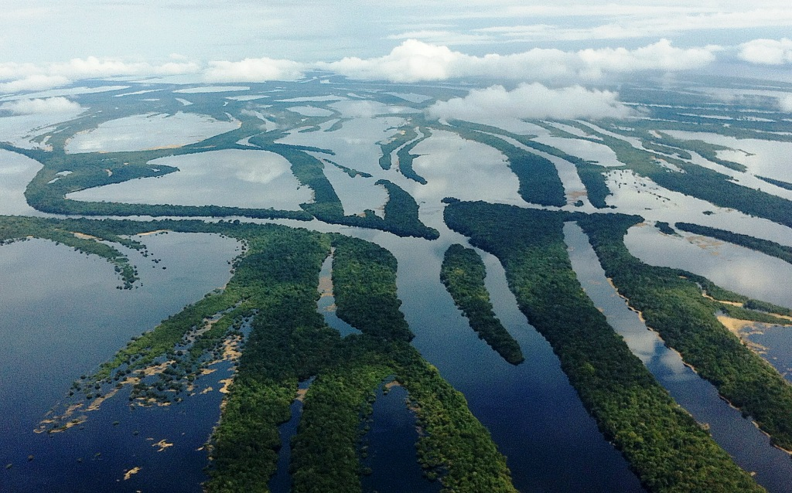
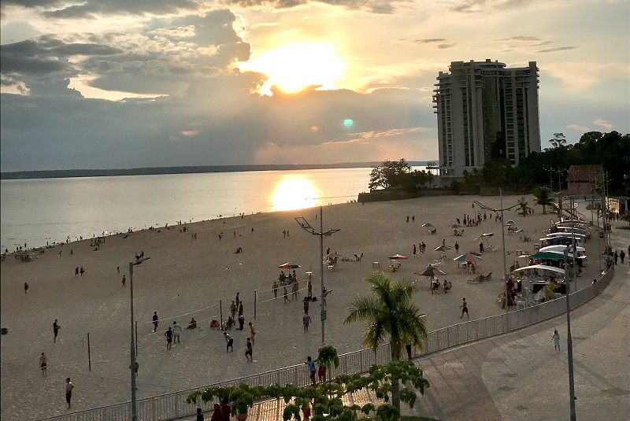
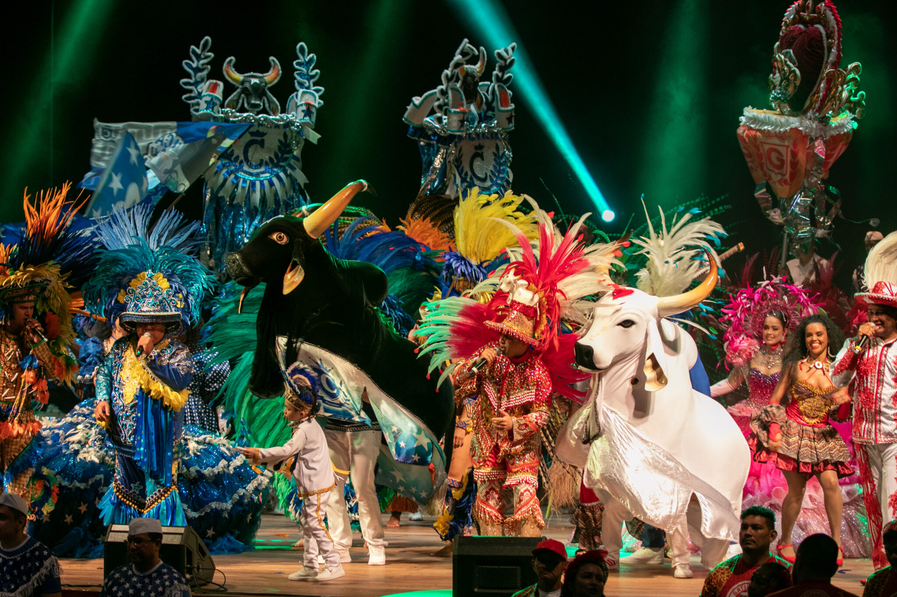
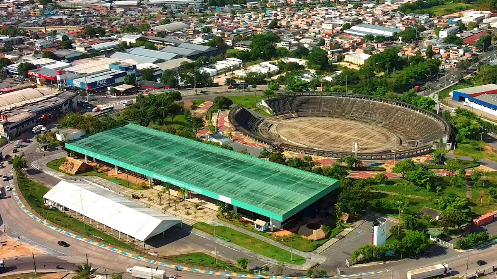

Manaus

Manaus, a capital do Amazonas, é um destino turístico de grande importância tanto no Brasil quanto internacionalmente. Localizada no coração da Amazônia, Manaus serve como porta de entrada para a maior floresta tropical do mundo e oferece aos turistas uma experiência única de imersão na natureza e na cultura amazônica. A cidade tem um grande apelo histórico, sendo o centro da Era da Borracha e um ponto de convergência de influências culturais, indígenas e portuguesas.
Manaus é também um destino turístico popular por suas belezas naturais, como o encontro das águas do Rio Negro e do Rio Solimões, além de ser o ponto de partida para explorar a imensa biodiversidade da Floresta Amazônica e de locais como o Encontro das Águas, o Parque Nacional de Anavilhanas e o Teatro Amazonas. Manaus também é uma cidade vibrante em termos culturais, com rica tradição em música, dança e arte, que remonta tanto à herança indígena quanto à afro-brasileira. Como centro turístico, Manaus proporciona experiências que vão desde o ecoturismo e atividades de aventura até o turismo histórico e cultural.
Principais pontos turísticos
- Teatro Amazonas
- Encontro das Águas
- Mercado Municipal de Manaus
- Palácio Rio Negro
- Parque Nacional de Anavilhanas 
- Ponta Negra 
O Teatro Amazonas é um dos maiores ícones de Manaus e um dos teatros mais famosos do Brasil. Inaugurado em 1896, durante o auge da Era da Borracha, o teatro é um exemplo impressionante da arquitetura neoclássica e da grandiosidade da época. Ele foi projetado com materiais importados da Europa, como mármore e ferro, e é considerado um símbolo do desenvolvimento econômico e cultural de Manaus.
Hoje, o teatro oferece uma programação variada de óperas, concertos e outros eventos culturais.

O Encontro das Águas é um dos fenômenos naturais mais impressionantes de Manaus. Trata-se do ponto onde as águas escuras do Rio Negro se encontram com as águas barrentas do Rio Solimões. Por mais de 6 km, as águas de ambos os rios não se misturam, criando um espetáculo visual único. O Encontro das Águas é uma atração imperdível para quem visita a cidade e pode ser visto em passeios de barco pelo Rio Negro e seus afluentes.
O Mercado Municipal de Manaus, também conhecido como Mercado Municipal Adolpho Lisboa, é um dos locais mais tradicionais da cidade. Inaugurado em 1882, o mercado é um excelente lugar para conhecer os produtos típicos da Amazônia, como frutas exóticas, peixes amazônicos e artesanatos regionais. O mercado tem uma arquitetura de influência européia, com detalhes em ferro fundido, e é um local vibrante, onde visitantes podem explorar a gastronomia local, fazer compras e observar a cultura cotidiana de Manaus.
O Palácio Rio Negro, também conhecido como Palácio do Governo do Amazonas, é um dos edifícios mais importantes da cidade, tanto em termos históricos quanto arquitetônicos. Construído no final do século XIX, o palácio foi residência de governadores e agora abriga um centro cultural e museu. O edifício tem uma arquitetura que mistura influências europeias com materiais típicos da região e é cercado por belos jardins, sendo um ótimo lugar para conhecer mais sobre a história política de Manaus.
O Parque Nacional de Anavilhanas é um dos maiores complexos de ilhas fluviais do mundo, e um dos principais destinos de ecoturismo em Manaus. Localizado no Rio Negro, o parque oferece passeios de barco, observação da fauna e flora amazônicas e trilhas pela floresta. Anavilhanas é conhecido por sua grande biodiversidade, com espécies como macacos, aves, jacarés e uma infinidade de plantas da Amazônia.
A Ponta Negra é uma das áreas de lazer mais visitadas de Manaus, localizada às margens do Rio Negro. A praia urbana oferece uma vista espetacular do rio, além de várias opções de restaurantes, bares e espaços de lazer. A região é popular entre os locais e turistas, especialmente ao pôr do sol, quando a vista do rio é simplesmente deslumbrante.
Principais pontos gastronômicos
- Restaurante Banzeiro
- Localização: Nossa Senhora das Graças.
- Ópera Restaurante
- Localização: Centro Histórico de Manaus.
- Fitz Carraldo Bistrô
- Localização: Centro Histórico de Manaus.
- Tambaqui de Banda
- Localização: Centro do Amazonas.
O Restaurante Banzeiro é um dos mais renomados de Manaus, especializado em culinária amazônica moderna. Com pratos feitos com ingredientes típicos da região, como o tambaqui, pirarucu e açaí, o Banzeiro oferece uma experiência gastronômica autêntica e sofisticada. O ambiente do restaurante também é elegante, proporcionando uma experiência única aos clientes.
A majestosa visão do Teatro Amazonas é a primeira de muitas sensações experimentadas por quem vai ao Ópera Restaurante. Outra é a experiência gastronômica que mistura os matizes e sabores amazônicos às receitas e técnicas internacionais. O elegante gazebo com cúpula de ferro e vidro integra o espaço do novo hotel-boutique de Manaus, o Juma Ópera. O restaurante é palco das criações exclusivas da chef Sofia Bendelak, que esteve no comando do Bistrô Ananã, pioneiro na combinação de pratos contemporâneos com sabores amazônicos.
O cardápio confirma essa vertente da chef e apresenta duas versões: Amazônia Profunda, voltada aos peixes, frutos, raízes e vegetais regionais; e Clássicos, para aqueles que não abrem mão de um prato tradicional bem executado. Entre as delicias da casa estão a trouxinha de pato com velouté de tucupi e a moquequinha de tucunaré com arroz de castanha e pirão de coco.
Ocupando um prédio histórico quase ao lado do imponente Teatro Amazonas, cartão postal de Manaus, o Bistrô Fitz Carraldo está entre os bons restaurantes da cidade. Ele funciona no Villa Amazônia, um charmoso hotel que tem como destaque a piscina cercada por um belo jardim. O espaço é informal, com uma decoração clean, valorizando o uso de madeira. A divisão em vários ambientes permite jantares mais reservados. Algumas mesas têm vista para a piscina. Sob o comando da chef Juci Rodrigues, o restaurante aposta na fusão da culinária internacional com ingredientes amazônicos.
O menu traz delícias como o pastel crocante de queijo coalho, tucumã e castanhas frescas; mignon com molho de cogumelos e risoto de gorgonzola; gratin de pirarucu e camarão com crocante de cebola e arroz branco; e o Fitz Burger. O restaurante oferece drinks variados, como caipirinhas especiais, além de vinhos e espumantes.
A peixaria Tambaqui de Banda traz os deliciosos peixes locais. Aqui vale experimentar os assados tambaqui, matrinxã, pirarucu, sardinha ou pacu, e também as caldeiradas e moquecas. Ocupa uma casa de 1960, decorada com azulejos portugueses. Com mesas ao ar livre, o local também é excelente para tomar uma bebidinha, saboreando petiscos e apreciando a beleza do entorno, no fim da tarde ou à noite, com o clima mais agradável.
Principais pontos culturais
- Festival de Parintins 
- Localização: Manaus e Parintins.
- Centro Cultural dos Povos da Amazônia 
- Localização: Crespo.
- Teatro da Instalação
- Localização: Centro de Manaus.
- Museu do Amazonas
- Localização: Cidade de Deus.
- Museu do Seringal
- Localização: Mirim.
- Museu do Índio
- Localização: Centro de Manaus.
O Festival de Parintins, embora aconteça na cidade de Parintins, é um dos maiores e mais importantes eventos culturais da Amazônia, e Manaus é o centro das atividades que antecedem esse grande festival. O festival celebra a dança, a música e as tradições amazônicas, com os bois-bumbás Garantido e Caprichoso disputando o título de melhor boi em um espetáculo grandioso de cores e ritmos.
O Centro Cultural dos Povos da Amazônia é um importante espaço dedicado à valorização da cultura local e das comunidades indígenas. O centro oferece exposições, eventos culturais, apresentações musicais e apresentações teatrais, além de promover atividades educativas para preservar e divulgar a cultura amazônica.
O Teatro da Instalação é um centro cultural dedicado à arte contemporânea e performática. Com uma programação variada, que inclui teatro, dança e música experimental, o teatro é uma opção imperdível para quem quer conhecer as novas produções culturais de Manaus.
O Museu do Amazonas, fundado em 1908, é um dos principais centros culturais de Manaus. Com um acervo que inclui itens relacionados à fauna e flora da Amazônia, o museu também oferece exposições temporárias sobre a história da região, arte e cultura amazônicas.
O Museu do Seringal é dedicado à história da borracha e à época da Era da Borracha, quando Manaus viveu seu auge econômico. O museu está situado em uma antiga plantação de seringueiras e oferece aos visitantes uma visão detalhada do processo de extração da borracha, além de contar a história da vida dos seringueiros e das dificuldades enfrentadas durante esse período. O museu é uma experiência educacional única sobre a história da cidade e do estado do Amazonas.
O Museu do Índio em Manaus é um importante ponto cultural dedicado à preservação e à exibição das culturas indígenas do Amazonas. O museu oferece exposições sobre as diversas etnias que habitam a região, seus costumes, rituais e artes. Ele tem um acervo que inclui objetos, roupas, armas e utensílios feitos pelos povos indígenas. O museu também realiza eventos culturais que aproximam os visitantes das tradições indígenas.